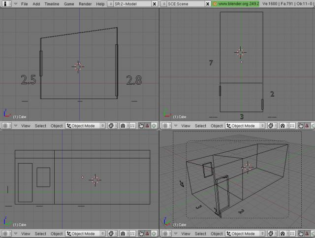
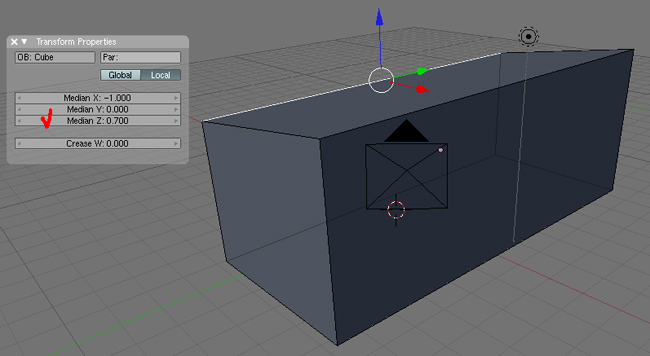
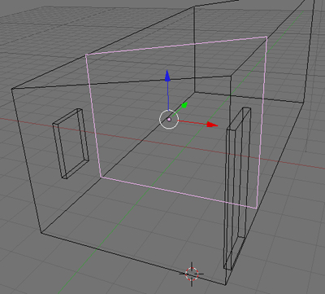
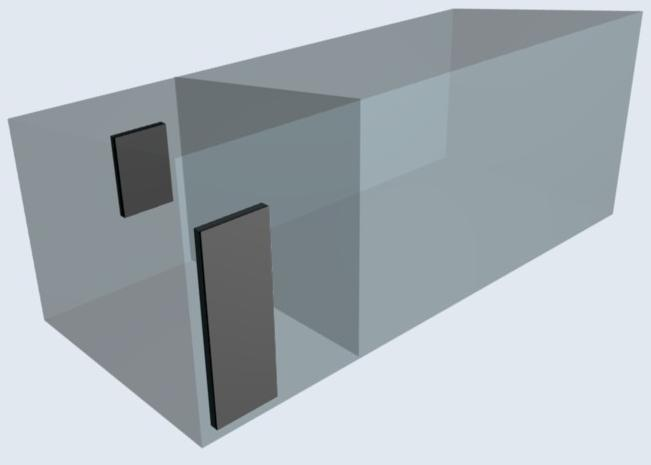

Создание объекта по точным размерам. Урок 15

Разработка урока к элективному курсу
"3D-моделирование в Blender"
Предположим, что нам дали задание нарисовать что-то вроде схемы-рисунка будущего строения, по которому строители должны будут сразу понять, что от них требуется. При этом важно отобразить на схеме пропорции строения. Например, заданы такие размеры реального здания:
- Длина — 7 м
- Ширина — 3 м
- Высота — 2.8 с одной стороны длины и 2.5 с другой стороны длины
- Дверь находится со стороны длиной стороны, у которой высота 2.8. Близко к краю.
- Окно находится на противоположной стороне от двери, со смещением на ширину двери.
- Внутри строение разделяет перегородка, отстоящая на 2 метра от короткой стены. Окно и дверь находятся в этой отгороженной маленькой комнате.
Вот что можно сделать в Blender:
- Разместим на сцене куб.
- Выделим его. Далее последовательно нажимаем S ? X ? 3. Тем самым устанавливается ширина, равная 3 единицам.
- S ? Y ? 7. Установка длины.
- Нажмите N. Появляется окно параметров объекта. В поле ScaleZ вводим значение 2.8. Нажимаем еще раз N, чтобы скрыть окно настроек.
- Поскольку высота с одной стороны должна быть меньше, чем с другой (крыша с наклоном), то переходим в режим редактирования нажатием Tab.
- Выделяем ребро, которое требуется опустить на 0.3 единицы. Нажимаем N. Уменьшаем Median Z с 1 до 0.7. Возвращаемся в объектный режим, закрываем окно параметров.

- Добавим на сцену другой куб. Сожмем его по оси X и увеличим по Z. Это будет дверь.
- Скопируем «дверь» (Shift+D) и уменьшим ее по оси Z. Получим окно.
- Вешаем дверь и окно на стены помещения.
- Продублируйте здание (без окна и двери). В режиме редактирования выделите одну меньшую грань и продублируйте ее. Остальные вершины удалите. Оставшуюся грань сместите на центральную точку. Выйдите из режима редактирования. После этого у вас должна получиться требуемая перегородка.
- Переключитесь в режим отображения Wireframe. Разместите перегородку внутри здания.

- Чтобы точно отмерить 2 единицы от стены, добавьте на сцену куб или цилиндр. Сильно уменьшите его, вызовите окно параметров (N), затем измените ScaleZ на 2, а RotX на 90. С помощью получившейся планки отмерьте 2 единицы, приложив к зданию, а затем подравняйте перегородку.
- Эскиз можно дополнить подписями, добавить к объекту материал и сделать его прозрачным.
